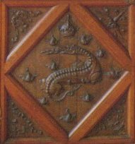
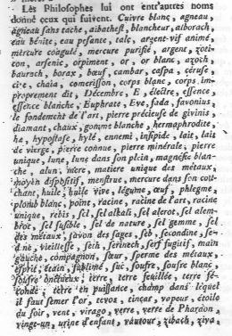
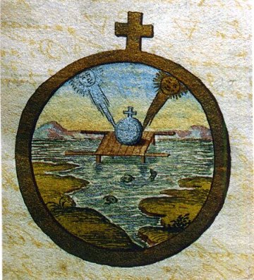
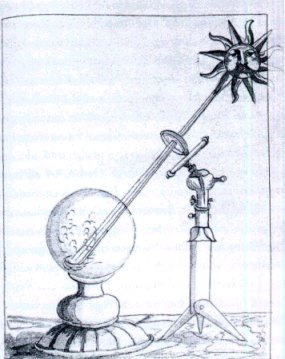
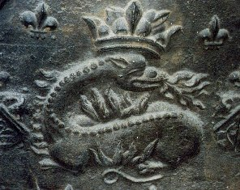
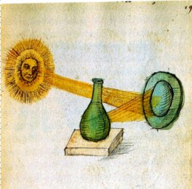
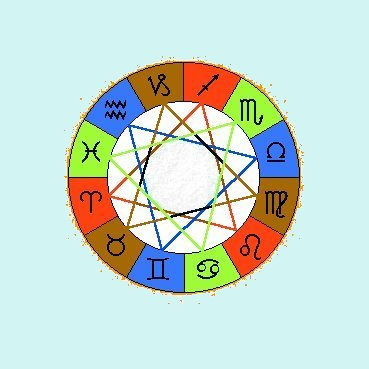

Emblema XXIX.
revu le 8 mai 2002
Ut Salamandra vivit igne sic lapis.
(Comme la salamandre, la Pierre vit du feu1.)
La salamandre au cœur du feu vit plus puissante
Et ne craint nullement tes menaces, Vulcain.
Comme elle, née d’un feu sans déclin, notre Pierre
Ne cherche pas à fuir la flamme impitoyable2.
Celle-là, froide, éteint l’incendie et sort libre.
La Pierre est chaude : elle aime donc chaleur pareille.
Il est deux éléments dans lesquels les animaux habitent : l’eau et l’air, et deux autres sans lesquels aucun être animé ne peut subsister : la terre et le feu3. Les deux premiers en effet possèdent une nature moyenne et tempérée en ce qui concerne les qualités premières et les qualités secondes, tandis que les deux derniers au contraire ont une nature extrême : ce sont des corps ou bien trop épais, ou bien trop subtils, ce qui fait que leur épaisseur rend impossible la présence d’autres corps, tandis que leur subtilité la rend possible mais pénètre ces corps et les brûle4. Si des hommes vivent dans des cellules et des fosses souterraines, cela est dû à l’air qui descend jusque-là et remplit ces lieux pour éviter qu’ils ne soient vides. Mais ici nous parlons de chacun des éléments pris en lui-même. Dans l’eau vivent les poissons dont le nombre, la variété et la fécondité sont incroyables ; c’est même là que se rencontrent les plus grands de tous les animaux. L’air fait vivre les hommes, les quadrupèdes, les oiseaux, les vers et les insectes. Tout ce que l’on dit des esprits qui errent dans les parties cachées de la terre relève d’un domaine différent ; car ce ne sont pas des animaux. Dans le feu, dit-on, vit la seule salamandre. C’est un ver qui rampe ; elle ressemble assez au lézard, mais sa démarche est plus lente, sa tête plus grande et sa couleur différente. Je me souviens d’avoir vu une bête semblable dans les Alpes, au Mont-Splug. Après des orages et des pluies elle s’avançait hors des cavernes rocheuses et s’attardait sur le chemin. Un paysan m’indiqua son nom : Ein Moich. Elle avait autour d’elle une humidité tenace et visqueuse grâce à laquelle elle circule dans le feu sans dommage.
Mais la salamandre philosophique est bien différente de l’autre, bien qu’elle lui soit assimilée. Elle naît en effet dans le feu ; il n’en va pas de même de l’autre, mais si elle tombe dans le feu, sa froideur et son humidité abondantes et intenses empêchent qu’elle ne soit brûlée sur-le-champ et lui permettent de traverser librement la flamme. L’une est chaude et sèche, l’autre froide et humide. Toute chose en effet rappelle la chaleur du sein de sa mère, imite son lieu naturel et sa patrie : le feu ne produit rien que de chaud et de sec, c’est-à-dire de semblable à lui-même. Inversement, des cavernes humides et froides, des roches remplies par les pluies sort ce ver froid. La première salamandre se plaît dans le feu, en raison de sa ressemblance de nature, la seconde l’éteint, car elle lui est opposée et, pendant quelque temps, écarte d’elle son action. On dit que l’on voit s’envoler des fours où l’on traite le cuivre à Chypre un pyrauste engendré dans le feu. Mais personne ne saurait croire à la véracité d’un tel fait, sinon sur le mode allégorique. Car le feu détruit et corrompt les corps de tous les animaux si on le continue, puisqu’il brûle même la terre et la transforme en verre, réduit en cendres les bois résistants ainsi que tous les composés, sauf quelques-uns comme les substances mercurielles qui, ou bien demeurent intactes, ou bien s’envolent tout entières dans le feu, sans qu’aucune séparation de parties ait lieu en elles5.
Vulcain est un bourreau intraitable : il convoque tous les mixtes composés de divers éléments pour les éprouver et les juger, en exceptant quelques-uns de sa compétence, comme en vertu d’un privilège, d’un induit de l’impératrice Nature. Il ne possède aucun droit de juridiction sur ces derniers, à moins d’adjoindre d’autres conseillers à son Aréopage ; telles sont les salamandres face à sa violence qu’elles ne redoutent pas. Avicenne, dans la Porte, énumère divers tempéraments de corps qui tous manquent d’équilibre et sont par conséquent susceptibles d’être corrompus par le feu et les autres atteintes. Une seule chose, à son avis, est parfaitement équilibrée ; elle possède autant de chaud que de froid, autant d’humide que de sec, non en poids mais en justice, comme disent les médecins6. C’est la chose qui est plus passive qu’active7. Si le feu s’efforce d’y résoudre l’eau qui lui est opposée en air qui est proche de lui, la terre ne permet pas cette résolution, car elle est incorporée à l’eau. Et le feu interne du composé apporte son suffrage au jugement de la terre car il témoigne à la terre une intime amitié8. Le jugement de Vulcain cesse donc de s’exercer. Le dieu utilise encore un autre détour et tente de consumer la terre et de la réduire en cendres comme il en a l’habitude. Mais l’eau qui est unie à la terre obtient une exception à son encontre : elle montre qu’elle est unie à la terre, que l’air lui est uni, que de l’autre côté de la terre se trouve le feu. En conséquence, qui voudrait incinérer la terre réduirait également en cendres les autres éléments ; et Vulcain, déjoué de la sorte, suspend son jugement pour ne pas être la risée de tous9.
Ce corps est semblable à la très véritable salamandre10 en qui les éléments sont équilibrés par la violence des vertus. Le Rosaire rapporte à son sujet les paroles de Geber :
« En outre, ce philosophe veut que cette substance de Mercure soit mortifiée, mais son Mercure est naturellement dans cette vénérable pierre, comme cela apparaît à chacun. Donc etc. »
De plus, ce philosophe veut que cette substance du Mercure soit fixe, comme cela est évident, car il enseigne l’art de fixer avec des précautions et une habileté extrêmes, mais qui pourrait douter que la substance de cette pierre précieuse ne soit très fixe ? Aucun, assurément, de ceux qui la connaissent. Il en résulte que la Pierre doit être amenée par la fixation à la nature de la salamandre, c’est-à-dire au plus haut point de fixité qui ne refuse pas le feu et ne se dérobe pas devant lui11. Car la salamandre ne peut exister avant d’avoir appris avec la plus grande patience à supporter le feu, ce qui requiert obligatoirement un laps de temps prolongé12. Il sera parlé plus loin, au Discours emblématique XXXV, d’Achille et de Triptolème, placés la nuit sous des cendres ardentes jusqu’à ce qu’ils soient devenus capables de supporter une chaleur très violente13. Ils acquirent eux aussi la propriété de la salamandre, moyennant l’habitude et l’accoutumance. L’habitude est en effet une seconde nature ; mais si cette nature n’a pas communiqué sa puissance et, agissant en maîtresse, n’a pas entrepris l’altération, l’habitude ne sera pas, ou ne sera que peu opérante. C’est pour cette raison que le feu ne peut solidifier la glace, mais qu’il peut solidifier le cristal, parce qu’ici la nature a commencé l’opération14. On doit de même penser, à propos du Mercure aqueux et volatil, que sa nature ne permet pas la solidification, si ce n’est grâce à l’étreinte du soufre qu’on lui a marié. Ce soufre est la teinture philosophique15 et il fixe tous les esprits qui volent.
Notes1. La salamandre. Arcane vu plusieurs fois. Le point complet sur cet animal fabuleux, dans la section Fontenay. Le parallèle avec la Pierre est d'importance et s'explique d'une manière parfaitement rationnelle. Fulcanelli a écrit un chapitre entier sur la Salamandre de Lisieux qui se situe, sauf erreur, au tome II des Demeures Philosophales. Nous donnons ci-dessous une

FIGURE I
(salamandre du château de Terre-Neuve, cliché Alain Mauranne)
magnifique salamandre, que l'on peut voir dans l'encadrement d'une porte du château de Fontenay-Le-Comte. Il faut tenir compte ici non seulement de l'animal pyroxène mais aussi du motif qui l'encadre et qui n'est pas indifférent. Car ce losange désigne un rhombe qui figure, dans certaines civilisations d'outre-atlantique, une divinité chthono-sélénite qui est à l'image même de l'escarboucle des Sages dont le feu central est représenté par cette salamandre [que nous demandons au lecteur de bien séparer de son appartenance traditionnelle à François Ier, ce qui sinon, risquerait d'occulter sa signifiance hermétique].
2. Il est question ici de susbtances « pyroxènes », c'est-à-dire de substances infusibles qui « vivent » dans le feu au lieu d'être détruites, carburées et volatilisées. En alchimie, seules deux substances répondent à cette définition : le Sel et le lien du Mercure. Le Sel est à la fois un terme générique pour désigner un Mixte et le terme hermétique pour désigner l'Arsenic de Geber ou le principe Corps. C'est donc, nous l'avons dit ailleurs, une substance qui était connue bien avant Paracelse ; elle ne doit son nom de Sel qu'à l'extension kabbalistique [nous ne faisons donc pas référence ici à la cabale hermétique traditionnelle, mais à celle qu'a tenté, d'ailleurs avec succès, d'imposer Paracelse] due à Theophraste Bombardus. Le Sel générique recouvre des substances qui sont utilisées dans la préparation du Mercure. Les alchimistes en parlent au travers d'énumérations à la Perec ou à la Jules Verne qui n'en finissent plus et qui découragent l'impétrant : ces substances sont désignées souvent par le biais de mots cabalistiques et il est rare que les Adeptes emploient le mot caractérisant la substance. Aussi est-il question assez souvent du dragon babylonien [qui caractérise en fait le vitriol romain, qui n'a rien à voir directement avec le Mercure], du Lait de Vierge [qui a fait flores chez les Adeptes, peut-être grâce à Artephius]. Mais d'habitude, les alchimistes ont confondu les ignorants en mêlant adroitement les noms qu'ils ont donné au laiton avec les noms des sels qui doivent être employés dans la préparation du Bain des Astres. Voici une liste de ces noms, dressée par Pernety, dans ses Fables Egyptiennes et Grecques.

FIGURE II
(la Matière des Philosophes)Cette liste se passe de commentaires...Il fallait être un moine bénédictin pour entreprendre un tel travail. Mais il faut savoir aussi que Pernety a emprunté à Michel Maier des idées sur Troie en particulier. La liste des Sels à employer est plutôt de cet ordre là :
« Ils ont soin d’avertir que l’arsenic, les vitriols, les atramens, les borax, les aluns, le nitre, les sels, les grands, les moyens & les bas minéraux, & les métaux seulets, dit le Trévifan (Philos. des Métaux.), ne sont point la matière requise pour le Magistère.» [Pernety, Fables]
Tous les minéraux cités « en clair » sont des sels. Et tous, peuvent participer du Mercure, du Sel ou du Soufre. Mettons à part l'arsenic [en cabale, assimilable à l"hydrargyre philosophique, qui jette en confusion les étudiants sur la piste du minium, de l'oxyde rouge d'arsenic, etc.]. Les vitriols, si on les ouvre, donnent de l'esprit universel et un sel métallique. Les atraments désignent des sulfates et ne sont guère éloignés des vitriols. Batsdorff, dans son Filet d'Ariadne s'exprime à peu près dans les mêmes termes qu'a relevés Pernety :
« Et en la partie minérale qui n'est pas faite de mercure prochain, mais d'un mercure éloigné, comme sont les sels, les attramens, aluns, vitriols, arsenics, orpiments, antimoines, soufres et semblables. » [Filet d'Ariadne]
L'alun nous donne la base mercurique sous la forme du sel polychreste de Glaser et la terre de l'alun qui est de celle dont le verre malléable a été fait sous Tibère, selon ce qu'a rapporté Sainte Claire-Deville. Les antimoines sont des craies, des argiles, de la pierre spéculaire, etc. Edward Kelly dit énonce exactement les mêmes principes quand il affirme qu'on trouvera notre Matière dans :
« [...] une eau que les Sages nomment eau Mercurielle, lait de la Vierge, Lunaire, rosée de Mai, le Lion Vert, le Dragon, le Feu des Sages. Cette eau Mercurielle, ils l'ont comparée à la corrosive eau-forte, car de même que ces eaux à base d'atrament, d'alun, de cuivre, d'arménite, etc, corrodent les métaux et les dissolvent, ainsi cet esprit Mercuriel, ou eau, dissout son corps et en sépare la Teinture. » [Théâtre de l'Astronomie Terrestre, chapitre IV : préparation de la Terre Mercurielle]
La confusion est d'autant plus facile à mener que les Anciens confondaient sous une seule dénomination [atramentum], ce qui était vitriols et aluns. Rhazès a parlé le premier d'une huile obtenue par la distillation de l'atrament ; cette huile (oleum) ne pouvait être que de l'huile de vitriol. Le résidu de l'opération était le crocus ferri dont nous avons parlé dans l'Atalanta, XXV en commentant la cheminée alchimique d'Avignon, dont notre ami, M. Alain Mauranne a reconnu la valeur hermétique. Dans le même registre, on trouve encore ce texte chez Basile Valentin :
« Aucuns ouvrent de Vitriols, Alums, Attramens, Sels et de toutes manières de drogueries, comme sont Antimoine, Tutie, Magnésie, Calamine, Marcassites, et toutes manières de borax. Les autres prennent les quatre Esprits savoir l'Orpiment, Sel armoniac, Souffre et Vif argent » [Révélation, etc. concernant les Teintures Essentielles des Sept Métaux, 1646]
Là, en prime, nous avons des sels de zinc, de la marcassite [autre terme générique] et du sel armoniac [correspond-il au chlorhydrate vulgaire ou au lien du Mercure ? Mystère]. Si nous ouvrons le Dictionnaire Mytho-hermétique de Dom Pernety, voilà ce que nous trouvons à l'article SEL :

FIGURE III
(l'union cosmique du Soleil - Arès- et de la Lune - Aphrodite - in mss M16, 226, BPH, Amsterdam)Sel. Substance composée de peu de terre sulfureuse et de beaucoup d'eau mercurielle. Les Chymistes entendent par sel la matière substancielle de corps, dont le soufre est la forme. On compte en général trois sortes de sels principaux, le nitreux, le marin et le vitriolique; quelques-uns y ajoutent le tartareux. Le marin passe pour être le principe des autres. De ce sel volatilisé se forme le nitre, du nitre le tartre, et du tartre cuit et digéré le vitriol. Ils partagent encore les sels en trois classes, qu'ils appellent sel volatil, sel moyen et sel fixe. Le premier ou le volatil mêlé avec la soufre volatil, est proprement le mercure, ou le principe des odeurs, des couleurs et des saveurs : le sel moyen qui en est la base, avec le sel fixe, qu'ils appellent proprement corps : de manière que le soufre et le sel fixe sont comme dans un tableau, la toile toute imprimée, et prête à recevoir l'ébauche; le sel et le soufre moyen sont l'ébauche même; et le sel avec le soufre mercuriel ou volatil, sont les couleurs fines ménagées, et le vrai coloris, ou la dernière main d'un tableau.a3. Il faut comprendre que l'AIR et l'EAU servent de moyens de transport aux Soufres ; il s'agit des deux éléments qui se rapportent au Mercure [en effet, les animaux qu'évoque Maier ont cette propriété de n'être jamais fixes : oiseaux et poissons. Ils se meuvent dans l'élément mobile]. Mais qu'on ne trouvera la Pierre que si l'on trouve notre TERRE et notre FEU. La TERRE est le Sel fixe incombustible et c'est par le FEU, comme vu plus haut, qu'on ira chercher le principe de teinture ou Soufre rouge.SEL . Terre feuillée des Sages, ou pierre au blanc, qui est en effet un sel, mais le premier être de tous les sels, sans être tiré d'aucun sel particulier, comme nitre, alun, vitriol, etc. SEL ALKALI. Le magistère des Sages est un Sel alkali, parce qu'il est la base de tous les corps; mais en vain pour le faire se servirait-on du sel de soude, ou de quelque autre sel alkali de quelque plante; car, comme dit Basile Valentin, le sel des plantes est un sel mort, qui n'entre point dans le magistère.b
SEL ELEBROT . C'est la même chose que sel alkali, ou le magistère au blanc.c
SEL FUSIBLE . Matière des Sages cuite et parfaite au blanc; elle est appelée Sel fusible, parce qu'elle est en effet un sel, et que ce sel fond comme la cire, quand on le met sur une lamine de métal rougie au feu.d
SEL DES METAUX . Plusieurs Chymistes prenant ces termes à la lettre, se sont imaginés que la matière des Philosophes était les métaux réduits en sel ou vitriol, parce que les Sages donnent le nom de Sel des métaux à cette matière; mais il faut expliquer ces termes de leur magistère au blanc, parce que de même que le sel est le principe des métaux vulgaires, le sel des Sages est la racine et la première matière des métaux philosophiques.eSEL DES INDES . Sel gemme. SEL ROUGE . Soufre rouge des Philosophes.
SEL ANDERON . C'est le nitre. SEL ALLOCAPH . Sel armoniac. SEL DE HONGRIE . Sel gemme. SEL AMER . Alkali.
SEL DE GRECE . Alun.
SEL INDIEN . Mercure des Sages. SEL DE NOM . Sel gemme. SEL DE PAIN . Sel marin ou commun.
SEL FOU . Salpêtre.f
SEL ALOCOPH . Sel armoniac. SEL ROUGE DES INDES . Anathron.
SEL DES SAGES . Sel armoniac naturel. Mais le sel des Sages ou Philosophes Hermétiques, est leur matière parvenue à la blancheur.
SEL INFERNAL . Nitre. SEL TABERZET , SEL CRISTALLIN
SEL DE CAPPADOCE, Sel gemme. SEL LUCIDE , SEL ADRAM , SEL SOLAIRE . Sel armoniac des Philosophes. SEL HONORE . Matière de laquelle se fait le mercure hermétique.
SEL FLEURI . C'est le mercure même, ou eau sèche des Sages. C'est pourquoi Marie (dans son Epître à Aros) dit, prenez les fleurs qui croissent sur les petites montagnes.g
SEL BRULE . Matière de l'œuvre au noir. SEL SPIRITUALISE , ou Esprit de sel des Philosophes. C'est leur mercure préparé par la sublimation Hermétique.
SELPETRE DES SAGES . Nitre Philosophiqueh. SEL DE TERRE, SEL DE VERRE, Mercure des SagesiSEL DE LA MER .
SEL ARMONIAC DES PHILOSOPHES . Matière de l'œuvre pendant sa sublimation, et dans le temps qu'elle volatilise le fixe ou le soufre, ou l'or des Sages.j
SEL ARMONIAC . Matière parvenue à la couleur blanche; ainsi appelée de ce que l'harmonie commence à s'établir entre les principes de l'œuvre, qui pendant la putréfaction était un chaos plein de confusion.
SEL ACIDE . Mercure Philosophique.
SEL FIXE . Soufre des Sages.k
SEL VOLATIL . Mercure Hermétique.
SEL VEGETAL . Sel de tartre.l
SEL DE SATURNE. Plomb réduit en sel.m
SEL UNIVERSEL. Mercure des Sages.
__________________________________________________
Notes sur les articles SEL de Pernety :
a. Il faut s'attacher chez Pernety à bien faire décanter la matière, si l'on peut dire. En fait, la deuxième partie de sa définition du SEL mérite toute notre attention. Pernety fait bien voir, en effet, qu'il y a un rapport entre le SEL et le CORPS de la Pierre. Il ne cite pas l'expression « Toyson d'or », mais l'intention y ait, avec l'analogie de la toile à peindre, où le SEL fixe représente la toile, prête à porter le Soufre rouge ; remarquons, là encore, que Pernety passe très près de notre hypothèse sur la disposition du Soufre, dont il écrit qu'il est « mercuriel ou volatil », ce qui veut dire assez qu'il est en état de sublimation dans le Mercure.
b. cette TERRE FEUILLEE est l'un des fantômes de l'alchimie. Nous en discutons dans l'Atalanta, VI.
c. Ici, Pernety confond le sel alkali fixe qui participe du Mercure et l'oeuvre au blanc, c'est-à-dire la Grande Coction, passée le régime de Jupiter. Notez que le sel ALEBROT est aussi appelé le sel ALEMBROTH. De ce sel ALEBROT, Artephius a parlé dans son Livre Secret :« Elle transforme aussi les autres corps sous forme d’un sel fusible que les Philosophes ont appelé le " sel alebrot des philosophes ", meilleur et plus noble que n’importe quel autre sel, qui est totalement fixe et ne peut se dissiper dans le feu. »
d. On pourrait en dire autant que tous les autres sels, qui sont généralement fusibles, sauf le CORPS de la Pierre, infusible du moins avant l'invention de l'arc électrique par Moissan et le lien du Mercure.
e. Pernety entend ici l'humide radical métallique, qui est la racine des métaux et le tronc de l'arbre solaire.
f. On a déjà évoqué ce sel fou dans le Triomphe Hermétique de Limojon de Saint-Didier. Le Mercure est, en effet, réputé être un sel sauvage, fou, comme Ajax.
g. c'est le même sel qui pousse dans les vallées et en lisière des montagnes ; il porte aussi le nom de dragon Babylonien. C'est le vitriol romain. Par cabale, il figure les pétales de la marguerite [petalon].
h. c'est le Mercure, préparé canoniquement, que Fulcanelli a associé de façon géniale à l'allégorie de la galette des roix, qui contient le petit baigneur [appelé aussi fève hermétique ou rémore, ou encore le BasileuV de l'oeuvre, le chabot, etc.]
i. le sel de verre, encore appelé suin ou fiel de verre existe bel et bien. Voyez l'Art de la Verrerie, là-dessus. Dans l'acception de Pernety, l'expression prend bien sûr une dimension hermétique mais, ici comme ailleurs bien souvent, nous tombons sur les mêmes substances qui, toutes, encadrent la matière dont parle Fulcanelli en forme de rébus : «Soufre et potasse pour l'X : S(X)KOH ».
FIGURE IV
(putréfaction par l'aide du soleil au travers d'un miroir, in mss. M79.2, BPH, Amsterdam)La figure I comme la figure II expriment exactement l'action que doit exercer le SEL sur la matière. C'est par l'entremise d'un certain miroir que l'Artiste doit officier. Pour savoir de quel miroir [Brennglas] il s'agit, il lui suffira de se rappeler ces paroles de Philalèthe :
« Pour bien dénouer la difficulté, lis attentivement, ce qui suit : prends quatre parties de notre Dragon igné, qui cache dans son ventre l'Acier magique, et neuf parties de notre Aimant ; mêle-les ensemble avec l'aide du torride Vulcain, de façon qu'ils forment une eau minérale où surnagera une écume qu'il faut rejeter. Laisse la coquille et prends le noyau, purge-le à trois reprises par le feu et le sel, ce qui se fera aisément si Saturne a regardé sa propre beauté dans le Miroir de Mars. » [Introïtus, VI]
Il ne manquera pas d'observer que le miroir de Mars ne peut être qu'Aphrodite. Du coup, il saura qu'en combinanr Arès et Aphrodite, il parviendra à préparer son nitre vitriolé, épithète de Saturne.
j. C'est l'opération de la coagulation de l'eau mercurielle ; elle se poursuit dans le Sagittaire, après avoir débuté dans le Scorpion. Du reste, ces deux signes sont autant liés que le sont ceux du Bélier et du Taureau, car chose étrange ! là où nous trouvons deux exaltations traditionnelles dans les deux premiers signes zodiacaux, nous n'en trouvons aucune dans le Sagittaire et le Scorpion. Il y a plus : la Lune est en chute dans le Scorpion, c'est-à-dire à l'époque où la cuisson du Rebis est en plein [comprenez quand la Lune est pleine]. La réincrudation s'apprête sous le Sagittaire, signe en accord avec la musique, et donc d'accord avec l'hermétisme qui professe la domination de cette époque de l'oeuvre par le sel harmoniac [lyre d'Orphée]. Les maîtrises planétaires permettent de montrer que le Sagittaire se rapporte à l'AIR, par Jupiter [le Dieu de l'AIR et de la Foudre] ; mais le Sagittaire est aussi un signe appartenant au triangle de FEU. Or, cette période est davantage celle du FEU [plus exactement de la capture du rayon igné solaire, c'est-à-dire du Soufre rouge] que de l'AIR [voir là-dessus la réincrudation] auquel le Soufre finit par échapper par réincrudation et accretion au Corps. Quant au Scorpion, la tradition le fait un signe d'EAU. Dans la Prima materia et l'humide radical métallique, nous avons proposé un autre codage des triangles élémentaires qui nous a conduit à faire du Scorpion un signe d'AIR. Qu'est-ce à dire ? Nous savons que le Mercure est un Mixte réglé d'EAU et d'AIR, du moins dans son premier état, et que le Mercure Philosophique [animé] résulte de l'addition d'une part de Soufre [c'est-à-dire de FEU]. Au départ du « coup de feu » [Vulcain ardent], c'est l'EAU qui domine la première période ; vient ensuite la phase de sublimation ou EAU et AIR s'entrecroisent, période dominée sans doute par le Cancer et la Balance [pour des raisons que nous exposerons peut-être un jour - note : depuis que ces lignes ont été écrites, la section du zodiaque alchimique vient éclairer ce point de science -]. Puis, le Mercure débutant sa volatilisation [c'est-à-dire mordant sa queue], la phase de coagulation va se précipiter jusqu'à accrétion des Soufres. Donc, disions-nous, si le maître du Sagittaire est Jupiter [dieu de la Foudre], on sait que les astrologues ont dans un premier temps attribué la maîtrise du Scorpion à Mars, puis à Pluton [en faisant ainsi de ce signe une sorte d'enfer du zodiaque]. Dans l'humide radical métallique, on a fait voir que le Pluton moderne n'arrivait pas à cerner le symbolisme inscrit par les alchimistes dans ce Dieu, et qu'il fallait y voir Ploutos, autrement plus conforme à la doctrine [voyez Pluton].
k. Il y a là confusion entre le Soufre rouge [âme] et le corps de la Pierre qui est l'un des sels fixes de l'oeuvre.
l. l'alkali fixe [cendres de végétaux terrestres ou marins]. Le sel de tartre, ici, serait plutôt l'huile de tartre faite par défaillance, c'est-à-dire un carbonate de potasse hydraté très concentré.
m. l'expression sel de Saturne est ambigue. Il désigne le sel de Pierre, aussi bien que le salpêtre, le sel gemme ou le sel alembroth. [Fulcanelli y ajoute le vitriol vert et le vitriol romain, DM, I, p. 248]. Voyez la saturnie végétale. Saint Thomas a décrit ainsi la préparation d'un sel de Saturne, touchant à la préparation du Lait de Vierge. Il nous faut dire quelques mots de la recette : on met la chaux de Saturne avec une petite quantité de liqueur pontique et on fait chauffer le tout. Puis, passée la dissolution de la chaux, on la porte dans des vases où elle se refroidit peu à peu et où le sel de Saturne cristallise en aiguilles blanches et brillantes. On décante les eaux-mères pour les soumettre à une nouvelle évaporation, et en extraire de nouveaux cristaux. C'est de cette manière que d'anciens alchimistes trouvèrent les recettes pour préparer l'eau blanche, l'eau végéto-minérale ou l'eau de Goulard. Basile Valentin évoque encore le sel de saturne :« L'AME OU TEINTURE de SATURNE est d'une qualité plus douceâtre que celle de Jupiter & on ne trouve quasi rien de si doux, si on fait la séparation des parties pures d'avec les impures, afin qu'on en fasse des opérations bien plus parfaites. De plus, cet Esprit ou Teinture, appelée communément SEL de SATURNE, est de nature fort froide & sèche : c'est pourquoi je conseille aux personnes mariées de ne s'en pas beaucoup servir, car il refroidit trop la Nature humaine & empêche que leur semence ne puisse faire les opérations ordinaires » [Révélation, etc. concernant les Teintures Essentielles des Sept Métaux, 1646]
Le sel de Saturne, pour les chimistes modernes, est de l'acétate neutre de plomb. Il s'obtient en dissolvant l'oxyde de plomb (litharge) dans de l'acide acétique faible. C'est une substance blanche, cristalline, très soluble dans l'eau, soluble dans 8 parties d'alcool, et fort vénéneuse. Il a une saveur douce et aigrelette très désagréable. Il dissout aisément l'oxydé de plomb en excès pour donner des acétates basiques, nommés sous-acétates de plomb, qui sont solubles dans l'eau, doués d'une réaction alcaline, et qui précipitent par l'anhydride carbonique. Voici une préparation du sel de Saturne tirée du Cours de Chymie de Nicolas Lemery :
Prenez trois ou quatre livres d'une de ces Préparations ou Calcinations de Plomb, par exemple de céruse. Reduifez-les en poudre et les mettez dans un grand-vaiffeau de verre ou de grez. Verfez deflus du vinaigre diftillé jufqu'à la hauteur de quatre doigts , il fe fera une effervescence sans chaleur fenfible. Mettez le tout en dîgeftion fur le fable chaud pendant deux ou trois jours, remuant de temps en temps la Matiere , puis la laiffez raffeoir, & verfez la liqueur par inclination. Jettez de nouveau vinaigre diftillé fur la Cerufe reftée dans le vaifleau, & procedez comme deflus , continuant à mettre du vinaigre diftillé, & verfer par inclination jufques à ce que vous ayez diffout la moitié de la Matière ou environ : Méflez toutes vos imprégnations enfemble, & les ayant verfées dans un vaiffeau de grez ou de verre. Faites évaporer au feu de fable, par une lente chaleur, environ les deux tiers de l'humidité, ou jufques à ce qu'il fe faffe deffus une petite pellicule : Portez alors le vaiffeau à la cave ou en un autre lieu frais fans le remuer, il fe fera des cryftaux blancs. Séparez-les : faites évaporer la liqueur comme devant, & la remettez à la cave : Continuez les évaporations & cryftalifations jufques à ce que vous ayez tout retiré voftre Sel : Faites-le feicher au Soleil , & le gardez dans un pot de verre.
Si vous le voulez faire très-blanc, il faut le faire fondre dans du vinaigre diftillé, et de l'eau commune en égale quantité, puis le filtrer , & le faire cryftalifer comme nous avons dit : on peut reïterer cette purification trois ou quatre fois. [...] Remarques : Je me fers ordinairement de Cerufe pour faire le Sel de Saturne, parce que je la trouve plus ouverte, & plus facile à eftre diffoute que les autres préparations du Plomb, à caufe du vinaigre dont elle eft déjà imprégnée. L'effervescence qu'on remarque, vient de ce que les Acides du vin aigre entrant avec violence , écartent les parties de la Matière. Il faut remarquer que l'effervefcence qui fe fait lors qu'on verfe un pareil Acide fur
une autre Préparation de Plomb eft bien plus force, parce que l'Acide trouvant un corps moins ouvert que la Cerufe , fait plus d'effort pour entrer , & par confequent élev d'avantage la Matière. Dans ces Effervefcences comme dans plusieurs autres, on ne peut apperçevoir aucun degré de chaleur, quelques-uns mefme prétendent de monftrer que le froid y eft augmenté. Le vinaigre perd toute fa force dans la pénétration du Plomb, & acquièrt une faveur fucrée. Il ne faut pas s'imaginer qu'on tire un véritable Sel du plomb. Ce n'eft qu'une diffolution de fà propre fubftance par les Acides , lefquels s'incorporent avec luy affez eftroittement pour en faire une efpece de Sel [Cours de Chymie, Lemery]A quoi peut bien servir le sel de Saturne ? Il peut précipiter l'alun en vue de la préparation d'acétate d'alumine. Mais nous ne voyons pas l'usage que l'on peut faire de ce dernier sel.

FIGURE V
(salamandre de Bourges, palais Jacques-Coeur, cliché Alain Mauranne)C'est ce feu interne que l'Artiste devra aller chercher au tréfond des métaux, en les ouvrant par son eau salée [qui n'est pas l'eau de mer vulgaire, bien que quelques artistes aient cru que le Mercure pouvait s'obtenir à partir du chlorure de sodium. Ce n'est certes pas ce chemin, mais bien l'ancienne voie, qu'empruntèrent Fulcanelli et son disciple] et où il recueillera le précieux bouton de retour dont parle E. Canseliet, dans son Alchimie Expliquée sur ses Textes Classiques, et qu'il assimile à la vitreuse provision dont nous avons parlé au Donum Dei.
4. Il y a là un problème de poids des éléments mis en présence qui permet de maintenir un équilibre instable : le signe de la Balance est ici une indication. Notez que ce signe tient le milieu entre la Vierge et le Scorpion, c'est-à-dire entre le lieu de la parturition hermétique et celui où l'androgyne hermétique croît et se multiplie.
5. Nous passons ici rapidement sur l'analogie de Maier au sujet des deux salamandres, dont l'une allume le feu et l'autre l'éteint. Notez les relations au verre et à la cendre. On serait ainsi tenté de croire que le Mercure est du verre en cendre. Dès lors, rien n'interdirait à la Pierre d'être un verre cendré avec une trace de Soufre. du coup, on comprend l'allusion au miroir, illustrée par les figures III et IV. Il ne s'agit de rien d'autre que de la capture virtuelle d'un rayon igné par l'intermède du verre, appliqué sur une TERRE dont on fait une cendre.
FIGURE VI
(le verre cendré - extrait d'un mss alchimique, BPH, Amsterdam)6. Voyez nos Gardes du Corps pour l'allusion à la Justice et à Thémis [Verbum dimissum].
7. Allusion plus directe au Sel incombustible, décrit par Fulcanelli comme le patient, par comparaison à l'agent. Notez encore que l'on peut considérer aussi que le patient est le Rebis et l'agent, le Mercure. Mais comme le Soufre rouge est sublimé dans le Mercure, jusqu'à l'époque où le Soleil traverse le Sagittaire, c'est simplement dire de façon un peu différente la même chose. Voyez la cheminée alchimique du château de Terre-Neuve.
8. Ce passage sibyllin peut s'expliquer aisément si l'on tient compte des modifications que nous avons apportées [pour de pures raisons de logique] aux triangles zodiacaux de la tradition hermétique. Nous tenons toutefois à dire que tout ceci doit s'entendre sous l'optique exclusive de la cabale hermétique...Revoyons ces triangles :

FIGURE VII
(le quaternaire alchimique)Dans notre système, seul 1 triangle garde son caractère d'origine, celui de FEU [Bélier - Lion - Sagittaire]. De pures considérations logiques veulent que le triangle d'EAU lui soit opposé [Taureau - Balance - Verseau]. On voit ensuite que le triangle d'AIR [Cancer - Scorpion - Poissons] est opposé au triangle de TERRE [Taureau - Vierge - Capricorne]. Nous avons exposé dans la prima materia les raisons qui nous ont conduit à proposer cette réforme. Dès lors, ce passage sibyllin de Maier peut se décrypter ainsi : la coagulation de l'eau mercurielle est déclenchée par le Sagittaire [Feu] qui décoche sa flèche [le rayon igné solaire, la foudre de Jupiter]. Cette action s'oppose à celle du Mercure, opposé [sous la forme des Gémeaux, signe d'EAU selon notre système ; voyez l'humide radical métallique sur les Gémeaux]. L'action du Sagittaire est sous la médiation d'une préparation première des Soufres, qui s'opère dans le signe du Scorpion [voyez Ploutos]. Lorsque Maier dit que Vulcain suspend son office, il faut comprendre que la coagulation de l'Eau mercurielle intervient en raison d'une volatilisation du Mercure, l'AIR devenant prépondérant par rapport à l'EAU ; et que dans le même temps, l'Artiste doit tempérer le calorique qui permet à l'animation du Mercure de se manifester.
9. Il s'agit là de simples formules de style. Voyez l'Atlas des Connaissances humaines de Chevreul, planches I et II.
10. Et la solution semble donnée par Michel Maier. Remarque : il ne pouvait pas savoir quelle était la nature métallique dont est constituée le corps de la Pierre. Alors ? Mystère.
11. Qui survit au feu, c'est-à-dire qui finit par triompher du dragon Ouroboros. C'est pourquoi la matière de la Pierre a été comparée à l'Acier [Chalybs]. Notez au passage l'expression « pierre précieuse », qui, au vrai, peut n'être employée qu'au sens figuré.
12. Là encore, on ne peut point ne pas faire le rapprochement avec les expériences de sous-fusion des physiciens français du XIXe siècle,ni avec les précautions qu'Ebelmen avaient prises, quant à la nécessité absolue d'une très lente diminution de la température.
13. première référence explicite à la guerre de Troie. Nous y reviendrons en temps voulu [cf. Atalanta XXXV, XLIII et XLIV]. Voyez déjà là-dessus l'Atalanta, IV.
14. Référence explicite au travail du verre. Nous ne voyons pas où l'on pourrait trouver d'autre hypothèse que celle que nous proposons pour rendre compte de ces différentes pistes...qui nous ramènent toutes à Rome, près de la Tolfa.
15. Il s'agit là du Soufre rouge. Pour voir comment il faut s'y prendre pour dépurer le cristal des soufres grossiers, voyez l'Art de la Verrerie de Loysel.